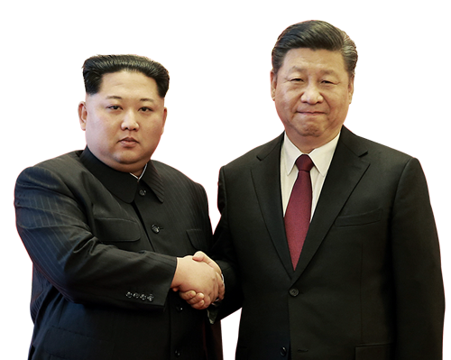

Kim Jong Il died on 17 December 2011[139] and was succeeded by his son, Kim Jong Un. In late 2013, Kim Jong Un's uncle Jang Song-thaek was arrested and executed after a trial. According to the South Korean spy agency, Kim may have purged some 300 people after taking power.[140] In 2014, the United Nations Commission of Inquiry accused the government of crimes against humanity.[141] In 2015, North Korea adopted Pyongyang Standard Time (UTC+08.30), reversing the change to Japan Standard Time (UTC+9.00) which had been imposed by the Japanese Empire when it annexed Korea. As a result, North Korea was in a different time zone to South Korea.[142] In 2016, 7th Congress of the Workers' Party of Korea was held in Pyongyang, the first party congress since 1980.[143] On 30 October 2015, the Politburo of the Central Committee of the Workers' Party of Korea announced through the Korean Central News Agency that it had decided to convene the 7th Congress of the Workers' Party in early May 2016.[144] In May 2016, North Korea held the Seventh Congress of the WPK, the first gathering of its kind in over 35 years.[145] By revealing the 5-year national economic development strategy, the mid-term economic development plan was announced for the first time in 24 years.[146] In 2017, North Korea tested the Hwasong-15, an intercontinental ballistic missile capable of striking anywhere in the United States of America.[147] Estimates of North Korea's nuclear arsenal at that time ranged between 15 and 60 bombs, probably including hydrogen bombs.[148] In February 2018, North Korea sent an unprecedented high-level delegation to the Winter Olympics in South Korea, headed by Kim Yo-jong, sister of Kim Jong Un, and President Kim Yong-nam, which passed on an invitation to South Korean President Moon to visit the North.[149] In April the two Korean leaders met at the Joint Security Area where they announced their governments would work towards a denuclearized Korean Peninsula and formalize peace between the two states.[150] North Korea announced it would change its time zone to realign with the South.[151] This time zone change was enacted in May 2018. blah blah blah booring..
